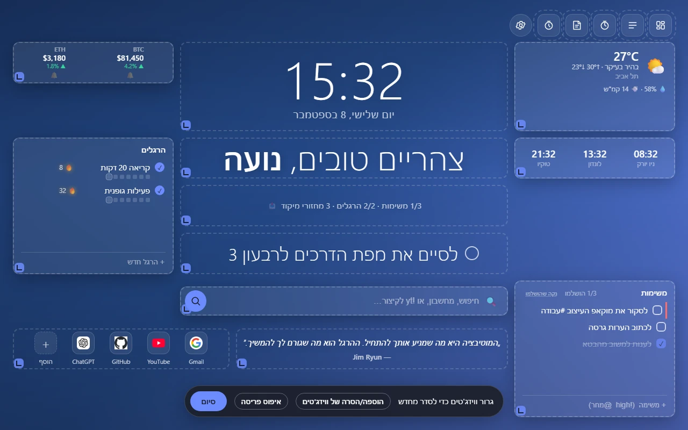
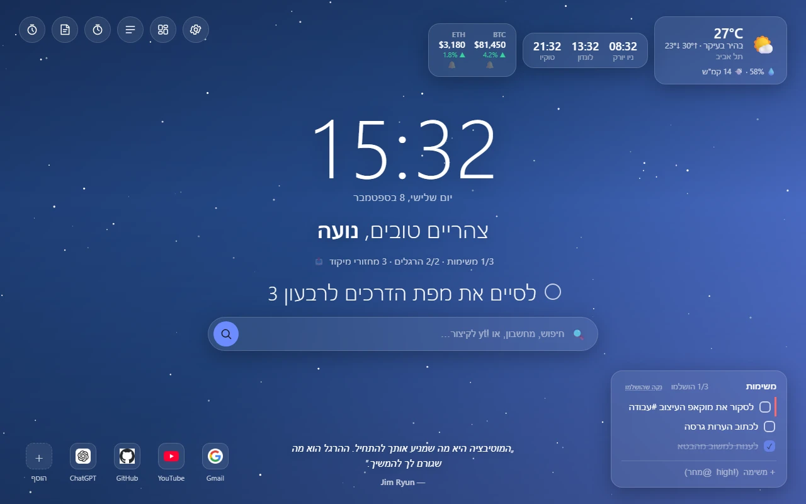
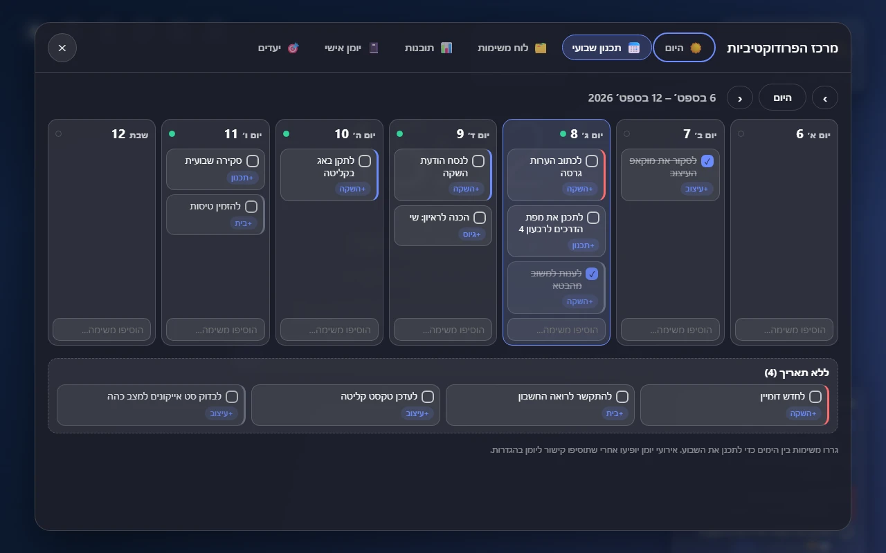
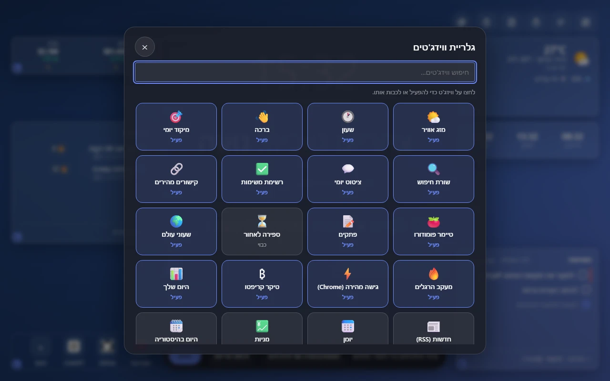
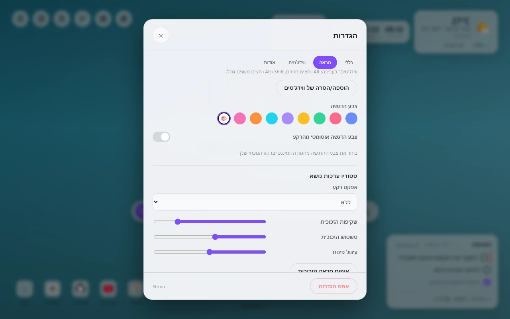
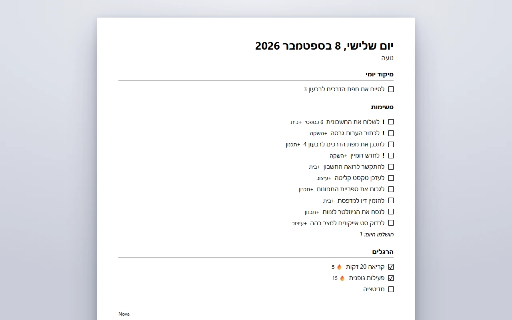

בנו דשבורד משלכם
עוברים לגריד חופשי וגוררים, משנים גודל ומסדרים כל ווידג'ט על קנבס של 12×8. שומרים את המראה כערכת נושא ומשתפים אותה בקוד קצר.

Nova הופך כל טאב חדש לדשבורד אישי ורגוע: שעון, מזג אוויר, משימות, הרגלים, טיימר מיקוד וחיפוש חכם במקום אחד. בלי חשבונות, בלי מעקב ובלי שרתים. המידע שלך נשאר על המכשיר שלך.
נבנה על ידי מפתח עצמאי. Nova 3 כבר כאן.

כל ווידג'ט הוא אופציונלי. בונים את הדף שמתאים ליום שלכם.
עוברים לגריד חופשי וגוררים, משנים גודל ומסדרים כל ווידג'ט על קנבס של 12×8. שומרים את המראה כערכת נושא ומשתפים אותה בקוד קצר.

כותבים ״להתקשר לאמא מחר דחוף״ והתאריך והעדיפות מובנים, בכל 18 השפות. הכול רץ על המכשיר שלכם, בלי AI.
תדריך יומי, תכנון שבועי, לוח קנבן, תובנות עם רצפים ומפת חום של 12 שבועות, יומן אישי ויעדים עם שלבים.

יותר מ-20 ווידג'טים, ממזג אוויר, משימות והרגלים ועד טיימר פומודורו, פתקים, שעוני עולם וחדשות. מפעילים או מכבים כל אחד בלחיצה.

עשר ערכות נושא, רקעים שעוקבים אחרי שעות היום ומזג האוויר, אפקטים מונפשים, תמונה משלכם, גופנים מותאמים, צבעי הדגשה, שליטה במראה הזכוכית, מצב קומפקטי ומצב זן, ניגודיות גבוהה וגודל טקסט מתכוונן.

לוחצים Ctrl+P ומקבלים דף נקי בשחור-לבן עם המיקוד, המשימות וההרגלים של היום. במצב אורח או כש-Nova נעולה לא מודפס שום מידע אישי.

מקלידים משימה למטה, או בוחרים שפה. תאריכים, עדיפויות, #תגיות ו-+פרויקטים מזוהים תוך כדי הקלדה.
זו הדגמה מפושטת שרצה בדפדפן שלכם ולא שולחת שום דבר לשום מקום. בתוסף עצמו המנתח מבין גם ימים בשבוע, ״בעוד 3 ימים״ ומשימות חוזרות, בכל שפה.
ל-Nova אין שרתים, אין חשבונות ואין אנליטיקס. המשימות, הפתקים וההגדרות שלכם נשארים בדפדפן שלכם.
הכול נשמר על המכשיר שלכם. סנכרון הוא אופציונלי, כבוי כברירת מחדל ועובד דרך חשבון Google שלכם.
בלי הרשמה, בלי מעקב ובלי פרסומות. אין לנו גישה למידע שלכם, כי הוא לא מגיע אלינו.
מזג אוויר, קריפטו, מניות וחדשות פונים לשירותים שלהם ישירות מהדפדפן שלכם, ורק כשמפעילים אותם.
| הרשאה | למה Nova משתמשת בה |
|---|---|
storage | שומרת את ההגדרות והמידע שלכם בדפדפן. |
geolocation | מזג אוויר למקום שבו אתם נמצאים. אפשר להקליד עיר במקום. |
favicon | מציגה אייקוני אתרים מקומית, בלי בקשה החוצה. |
alarms | תזכורות מקומיות: פומודורו, והרגלים ומשימות שקבעתם להם שעה. |
| אופציונליות | סימניות, אתרים מובילים, טאבים שנסגרו לאחרונה, חיפוש בטאבים פתוחים והתראות, וגישה לשירותי הקריפטו, המטבעות, המניות ו״היום בהיסטוריה״. כל אחת מבוקשת רק כשמפעילים את היכולת שלה. |
הממשק עוקב אחרי שפת הדפדפן ותומך בכתיבה מימין לשמאל כבר בהתקנה.
העדכון האחרון, בלי הרשאות חדשות.
תאריכים, עדיפויות וחזרות מובנים בכל 18 השפות, וגם קיצורי ה-! וה-@ עובדים בכל שפה.
דף נקי של משימות, הרגלים ואירועי היום עם Ctrl+P, ב-A4 או ב-Letter, משמאל לימין או מימין לשמאל.
כל פרופיל שנשמר זוכר את תמונת הרקע שהעליתם ומחזיר אותה כשעוברים אליו.
הטקסט על הרקעים האוטומטיים עומד עכשיו בניגודיות AA של WCAG, ועוד תיקונים בכרטיס היומן, במשימות בכרטיס צר ובעמידות הנתונים.
כן. היא חינמית וללא פרסומות, נבנית באופן עצמאי ונתמכת בתרומות מרצון של מי שאוהב אותה.
אף אחד. אין חשבונות, אין אנליטיקס ואין שרתים. המידע נשאר בדפדפן שלכם. בקשות הרשת היחידות הן לשירותים של יכולות שהפעלתם, כמו מזג אוויר, והן יוצאות ישירות מהדפדפן שלכם אל השירות.
השעון, המשימות, ההרגלים, הפתקים ורוב הווידג'טים עובדים בלי חיבור. ווידג'טים חיים כמו מזג אוויר, קריפטו וחדשות צריכים אינטרנט כדי להתרענן.
Nova נבנתה ונבדקת עבור Chrome ומותקנת מחנות האפליקציות של Chrome. הגיבוי לתיקייה עובד ב-Chrome וב-Edge, ויכולות ה-AI המקומי האופציונליות תלויות ב-AI המובנה של Chrome.
בהגדרות אפשר לייצא הכול לקובץ (אפשר להגן עליו בסיסמה), להפעיל גיבוי יומי אוטומטי לתיקייה שבחרתם, או להעתיק קוד העברה למכשיר אחר. אפשר גם לסנכרן הגדרות דרך חשבון Google שלכם.
פותחים issue במאגר הפרויקט ב-GitHub. רעיונות ותיקוני תרגום תמיד מתקבלים בברכה.
Nova חינמית, ללא פרסומות ונבנית באופן עצמאי. אם היא זכתה למקום בטאב החדש שלכם, שקלו לתמוך בפיתוח שלה.